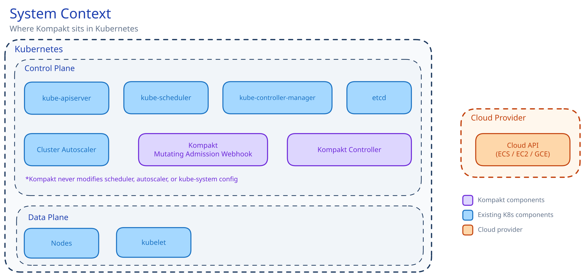

How It Works¶
What happens when a pod is created in a Kompakt-enabled cluster?
The core idea¶
Kompakt occupies the gap between admission and scheduling. It holds pods at admission time using Kubernetes scheduling gates (GA since v1.30) and releases them when rules confirm that capacity is available, incoming, or needs to be requested. Everything below Kompakt (the scheduler, the autoscaler) is unmodified.

Components¶
Mutating admission webhook¶
Intercepts Pod CREATE requests. For each incoming pod:
- Check if the pod has a
packer.kompakt.io/packing-profilelabel - If no label: allow the pod through untouched
- If label present: look up the named PackingProfile
- If profile not found: reject the pod with error "PackingProfile not found"
- If profile found: inject
spec.schedulingGatesand akompakt.io/trace-idannotation
| Rule | Gate |
|---|---|
| WaitForWorkloadPacking | kompakt.io/wait-for-workload-packing |
| WaitForNodeReady | kompakt.io/wait-for-node-ready |
Coordination controller¶
Watches gated pods and nodes. For each gated pod, it:
- Syncs the node ledger with current cluster state
- Runs the profile's rule plugins in order
- Releases gates, holds gates, or releases with node affinity
PackingProfile CRD¶
A cluster-scoped resource defining demand extraction, capacity source, node group templates, rule plugins, and reservation timeout. Pods reference a profile by name via the packer.kompakt.io/packing-profile label. See PackingProfiles.
Request flow¶
Scenario 1: Existing node has capacity (BinPack)¶
- Pod A is created with label
packer.kompakt.io/packing-profile: my-profile - Webhook injects
kompakt.io/wait-for-workload-packinggate - Controller syncs ledger: node-1 has 4 CPU free
- BinPack rule finds node-1 fits Pod A's 1 CPU demand, reserves the slot
- Controller releases gate, injects
nodeAffinitypointing to node-1 - Scheduler places Pod A on node-1
Scenario 2: No capacity, need scale-up (WaitForNodeReady)¶
- Pod A is created, no nodes have capacity. WaitForNodeReady releases immediately (passthrough)
- Autoscaler sees Pod A, triggers scale-up. Kompakt detects this from the
cluster-autoscaler-statusConfigMap - Pod B is created while the node is provisioning
- WaitForNodeReady: in-flight node can fit Pod B. Hold the gate, reserve capacity on the incoming node
- Pod B stays invisible to the autoscaler. No second scale-up triggered.
- Node becomes Ready. Controller re-evaluates Pod B: release with node affinity
- Scheduler places Pod B on the same node. Result: 1 node instead of 2.
Scenario 3: Timeout safety net¶
If a pod stays gated longer than reservationTimeout (default 3m), the gate is released unconditionally.
What the scheduler and autoscaler see¶
The scheduler sees pods appear later than usual (gated, then released). It does not know Kompakt exists. The autoscaler sees fewer simultaneously-unschedulable pods. Instead of 6 at once triggering 6 nodes, it sees 1-2 at a time and provisions accordingly.
Observability¶
See Observability and Metrics Reference.
Zero scheduler integration¶
Kompakt does not modify or replace kube-scheduler or cluster-autoscaler, require privileged DaemonSets or cluster-admin RBAC, or set schedulerName on user pods. Install is a Helm chart. Uninstall is deleting the webhook configuration.
Workload universality¶
| Workload type | How it works |
|---|---|
| Deployment (via ReplicaSet) | Each pod gated individually, coordinated with siblings |
| StatefulSet | Each pod gated, ordered creation respected |
| DaemonSet | Excluded by default (per-node workloads) |
| Job, CronJob | Gated, composes with Kueue if present |
| KServe InferenceService | Underlying Deployment pods gated transparently |
| Argo Workflow | Each step pod gated individually |
| Ray RayCluster | Each worker pod gated |
| Kubeflow PyTorchJob / TFJob | Each replica gated |
| Plain Pod | Gated if label is present |
Ready to try it? Install Kompakt and create your first profile.